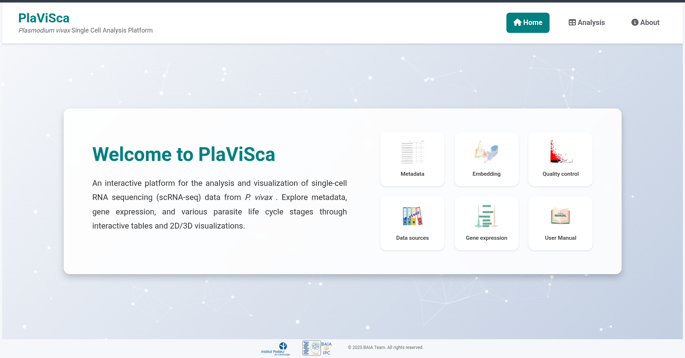
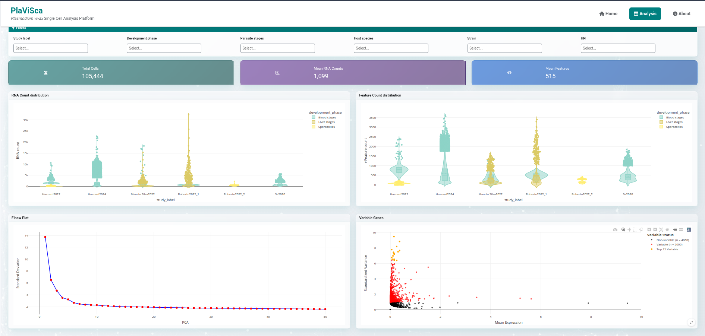
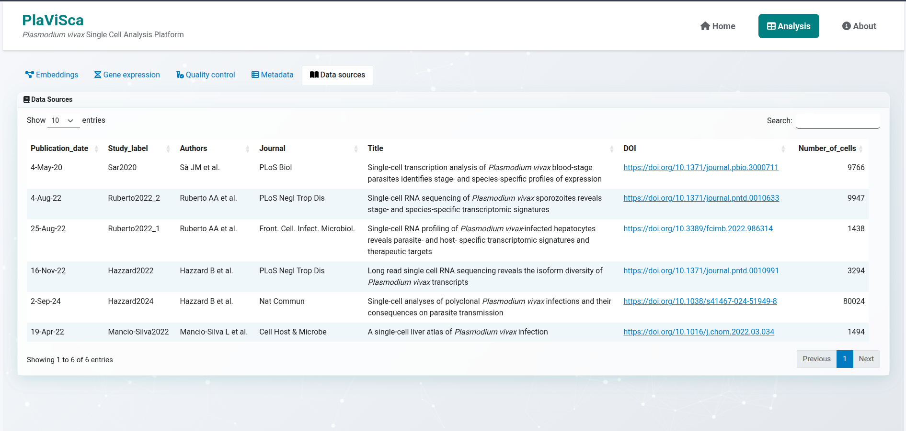

User Manual
Welcome to PlaViSca, an interactive web application for exploring single-cell RNA-seq data from Plasmodium vivax. This manual provides comprehensive guidance on navigating and utilizing the application’s features for malaria research.
Quick Start:
Filter data using the Metadata tab to focus on relevant samples
Explore expression patterns and quality metrics via interactive visualizations
Compare multiple genes in the Gene Expression tab
Download plots and data for external analysis
Data Integration: PlaViSca processes data from five studies using standardized Nextflow pipelines. See the Data Processing Pipeline section for technical details.
Overview of PlaViSca Features
PlaViSca consists of three main sections: Home page, Analysis page, and About page. Each section is designed to offer an intuitive, code-free platform for exploring single-cell RNA-seq data from Plasmodium vivax.
Home page

Figure 1: PlaViSca home pageThe Home page acts as the central landing point for users see Figure 1. It provides a concise overview of the application’s purpose and offers direct access to its core functionalities.
Menu bar:
The menu bar provides consistent branding and navigation across the entire application. It is fixed at the top of the interface, ensuring it remains visible and accessible on all pages for easy navigation.
Center: Shows the application name, PlaViSca, prominently, along with the subtitle Plasmodium vivax Single Cell Analysis Platform.
Right side: Contains the main menu items — Home, Analysis, and About — which allow users to navigate between different pages of the application.
Content:
The left section of the Home page contains a brief text outlining the goals and motivation behind the development of PlaViSca. It introduces the app as an interactive, code-free platform for exploring single-cell RNA-seq data from P. vivax, targeting researchers and public health professionals.
The right section displays a grid of interactive icons, each linking to a specific part of the application. These icons act as shortcuts, enabling users to quickly access key modules:
Metadata: Explore and filter dataset metadata.
Embedding: Access the Embeddings visualization tab.
Quality Control: Assess data quality metrics.
Data Sources: View dataset references and sources.
Gene Expression: Visualize gene expression patterns.
User Manual: Access this documentation.
Detailed explanations of these modules’ functionalities are provided in the following sections.
Footer:
The footer features a mosquito animation alongside interactive particle effects, enhancing the visual appeal of the website and making the interface more dynamic and engaging. Additionally, the footer includes the Institut Pasteur du Cambodge (IPC) and BAIA logos, along with a copyright notice: © 2025 BAIA Team. All rights reserved.
Analysis page
The Analysis page is designed to facilitate interactive exploration of both metadata and gene expression data. The page is organized into five tabs, each focusing on a distinct aspect of data analysis:
Embeddings
Gene Expression
Quality Control
Metadata
Data Sources
All tabs (except Data Sources) share a common Filters row at the top with the following fields:
Filter field |
Description |
|---|---|
Study label |
Filter by study/dataset of origin |
Development phase |
Filter by broad development phase |
Parasite stages |
Filter by predicted parasite stage (SingleR) |
Host species |
Filter by host organism |
Strain |
Filter by parasite strain |
HPI |
Filter by hours post invasion (intra-erythrocytic stage) |
Filters apply with OR logic within each field and AND logic between fields, allowing precise subsetting of the dataset. All tabs stay synchronized with each other’s filter selections.
Embeddings
Video 1: Embedding tab functionality
The Embeddings tab offers dimensionality reduction and customizable visualization of single-cell data Video 1. Key capabilities:
Plot Settings:
Setting |
Options |
|---|---|
Data Type |
Raw, Normalized (default: Normalized) |
Integration |
Integrated / Unintegrated (not available for t-SNE) |
Embedding |
PCA, UMAP (default), t-SNE |
Point Size |
S / M (default) / L |
Dimension |
2D / 3D (default) |
X / Y axes |
Selectable when 2D mode is active |
Color by: Study label, Development phase, Parasite stages, Treatment, Host species, or Genes.
Compare Plots mode: Click Compare Plots to display two independent plots (Plot A and Plot B) side-by-side, each with its own color selection and optional gene input.
Interactive Cell Selection: Click any cell to open a modal dialog showing a per-cell gene expression table (gene ID, gene name, expression value, description). The table is filterable and exportable as CSV.
Download Data: Exports the currently filtered metadata as a CSV file.
Gene Expression
Video 2: Gene expression tab functionality
The Gene Expression tab provides an interactive interface for exploring gene expression across various biological conditions Video 2. Key features:
Flexible Plot Management: Add or remove plot panels dynamically (panels display in a 2-column layout). Each panel has its own gene selection and grouping.
Data Type: Choose Raw or Normalized expression data (Scaled data is currently disabled).
Gene Search: Toggle between Gene Name and Gene ID search using the switch in each panel.
Gene Selection: Select up to 10 genes per panel; multi-gene panels display the averaged expression.
Group by: Organize expression by Study label, Development phase, Parasite stages, Host species, or Treatment.
Violin Plots: Each panel displays a Plotly violin plot with hover tooltips showing mean, SD, and cell count per group.
Annotations: Direct links to PlasmoDB and NCBI per gene (supports multiple tabs for multi-gene selections).
Download: Export per-panel expression data as an
.xlsxfile containing an Expression Data sheet and a Metadata sheet.
Quality Control

Figure 2: Quality control imageThe Quality Control tab provides visualizations to assess the integrity of single-cell RNA sequencing data Figure 2.
Summary value boxes:
Box |
Description |
|---|---|
Total Cells |
Number of cells after filtering |
Mean RNA Counts |
Mean number of RNA counts per cell |
Mean Features |
Mean number of features (genes) per cell |
Plots:
RNA Count distribution: Violin plot of RNA counts per cell, grouped by study or development phase.
Feature Count distribution: Violin plot of feature (gene) counts per cell.
Elbow Plot: PCA standard deviation per component, per study — used to determine the optimal number of PCs.
Variable Genes: Mean expression vs. standardized variance scatter plot, highlighting the top 15 highly variable features (HVF).
All plots respect the shared metadata filters and support interactive zooming, panning, and download via the Plotly toolbar.
Metadata
Video 3: Metadata filtration
A short video demonstration of the Metadata tab Video 3. This video provides an overview of how to filter datasets by biological and experimental attributes. Applying filters dynamically updates both plots and tables, enabling users to focus on relevant data subsets for further analysis.
Summary value boxes:
Box |
Description |
|---|---|
Total Cells |
Number of cells after filtering |
Studies |
Number of distinct studies represented |
Host Species |
Number of distinct host species |
Bar charts (6 total):
Chart |
Field visualized |
|---|---|
Development Phase |
development_phase |
Parasite Stages |
parasite_stages |
Host Species |
host_species |
Strain |
strain |
Treatment |
treatment |
Intra erythrocyte development stage |
hour_post_invasion (HPI) |
Note: All parasite stages are predicted by SingleR, except sporozoites which are confirmed by sample type.
Interactive Features:
Plotly Charts: Hover for details. Use controls (zoom, pan, download) in the top-right corner.
DT Table: Search globally or filter by column. Export as CSV.
Data Sources

Figure 3: Data sourceThe Data Sources section provides detailed documentation and attribution for the datasets utilized within PlaViSca Figure 3. It includes comprehensive metadata such as journal names, publication dates, article titles, authors, and DOI links, enabling users to directly access the original publications. This ensures transparency, facilitates reproducibility, and appropriately credits the contributors of the datasets.
Data Processing Pipeline
PlaViSca integrates data from five studies processed using Nextflow pipelines for downloading, alignment, and feature counting.
Download FASTQ Files: Scripts in the download_SRA GitHub repo download data from NCBI. Follow the
README.mdfor instructions.Alignment and Feature Count: Processed using STARsolo via Nextflow in the sRNA_nextflow_starsolo GitHub repo.
Pre-processing data: The scripts for pre-processig data including integration and annotation are found here: Pre_processing_data
Data Formats: Gene expression data is provided in normalized and raw formats. Metadata includes columns for study details, sample info, and biological annotations.
For technical details on data preparation, refer to the Installation section.
About page
Video 4: About
The About video page provides comprehensive information on the PlaViSca project, including its development background, team members, and how to get involved. It highlights the collaborative efforts behind creating a tool for malaria research.
Project Background
PlaViSca was developed to democratize access to single-cell RNA-seq data for Plasmodium vivax, enabling researchers worldwide to explore parasite biology without coding expertise.
Development Team
Name |
Role |
|
|---|---|---|
Sopheap Oeng |
Bioinformatic system engineer |
osopheap@pasteur-kh.org |
Lionel Brice Feufack-Donfack |
Postdoctoral researcher |
ldonfack@pasteur-kh.org |
Thomas Obadia |
Senior scientist |
tobadia@pasteur-kh.org |
Anthony Ruberto |
Senior scientist |
aruberto02@gmail.com |
Giorgio Gonnella |
Head, BAIA Unit |
ggonnella@pasteur-kh.org |
Open-source and Collaboration
PlaViSca is an open-source initiative, and we welcome contributions from the scientific community. Researchers interested in:
Integrating new datasets
Enhancing existing features
Reporting bugs or issues
Collaborating on future development
… are warmly encouraged to get in touch with the development team or open an issue on GitHub.
Best Practices
Filter First: Always start with the Metadata tab to focus on relevant data.
Leverage Interactivity: Hover for tooltips, download plots, and export data for external tools.
Quality Check: Verify data reliability in the Quality Control tab before drawing conclusions.
Compare Systematically: Add multiple Gene Expression plots side-by-side for cross-condition comparison.
Document Findings: Download all plots and data for reproducibility.
Support and Feedback
For questions, issues, or suggestions, contact the PlaViSca development team:
Emails: osopheap@pasteur-kh.org, ggonnella@pasteur-kh.org
GitHub Issues: Report bugs or request features
© 2025 BAIA Team, Institut Pasteur du Cambodge. All rights reserved.
Disclaimer: This manual is provided “as is” for informational purposes. PlaViSca is a research tool; users should verify results independently.